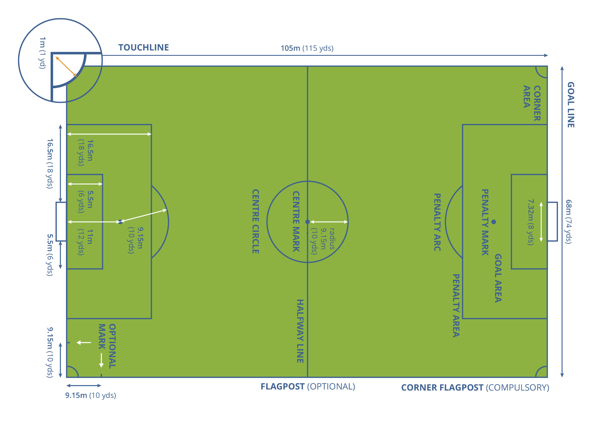

Futbol codificado
Futbol codificado
En este ejercicio se propone programar distintas funcionalidades a
partir de los datos de un partido de fútbol. Los archivos Local.csv
y Visitante.csv contienen los datos obtenidos para el movimiento de
todos los jugadores y la pelota, para el equipo local y el equipo
visitante, respectivamente. Una inspección de las primeras líneas de
cada archivo muestran datos en columnas:
Periodo,Cuadro,Tiempo [s],Jugador11,,Jugador1,,Jugador2,,Jugador3,,Jugador4,,Jugador5,,Jugador6,,Jugador7,,Jugador8,,Jugador9,,Jugador10,,Jugador12,,Jugador13,,Jugador14,,Pelota,
La primera columna corresponde al período (primero o segundo) del partido. La segunda columna es el número de cuadro (frame) en el que están tomados los datos, que se corresponde con el tiempo en segundos definido en la tercer columna. Las siguientes columnas corresponden a las posiciones x e y de cada jugador en el campo de juego. Finalmente, las últimas dos columnas corresponden a las posiciones x e y del balón.
Las coordenadas x e y están obtenidas en valores relativos entre 0 y 1, siendo la posición (0,0) la del corner superior izquierdo, y la (1,1) la del corner inferior derecho. Las dimensiones establecidas por la FIFA corresponden a un campo de juego de 105 m de largo por 68 m de ancho. Las dimensiones de cada zona se pueden ver así:
{kind=link}
Enunciado
Arme su propio ejercicio:
Resuelva los dos items obligatorios
Resuelva 2 (dos) de los items a elección
Items obligatorios:
Crear un gráfico claro y bello del campo de fútbol, que represente adecuadamente las dimensiones reales del mismo.
VideoRef: Dados dos tiempos \(t_1\) y \(t_2\) (\(t_1 < t_2\)), crear una animación del juego entre esos dos tiempos, representada sobre el campo de juego graficado en 1. La animación debe distinguir entre los dos equipos, y la pelota.
Items a elección:
Dado un jugador a elección, grafique el mapa de calor del mismo a lo largo del partido.
Encuentre el jugador más rápido del encuentro.
Determine cuántos goles, corners y laterales se produjeron durante el encuentro.
Encuentre el tiempo neto de juego (definido como el tiempo durante el cual el balón está dentro del campo de juego).
Consejo
Tenga en cuenta que:
El número total de jugadores de cada equipo es mayor que 11, dado que se cuenta con los datos de los cambios que se produjeron durante el juego.
Los equipos cambian de lado en el entretiempo.
Cuando la posición contiene
NaN, implica que no se tiene datos sobre la misma.
Nota
Todos los archivos con datos se encuentran en data